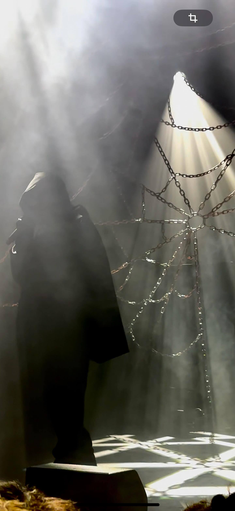
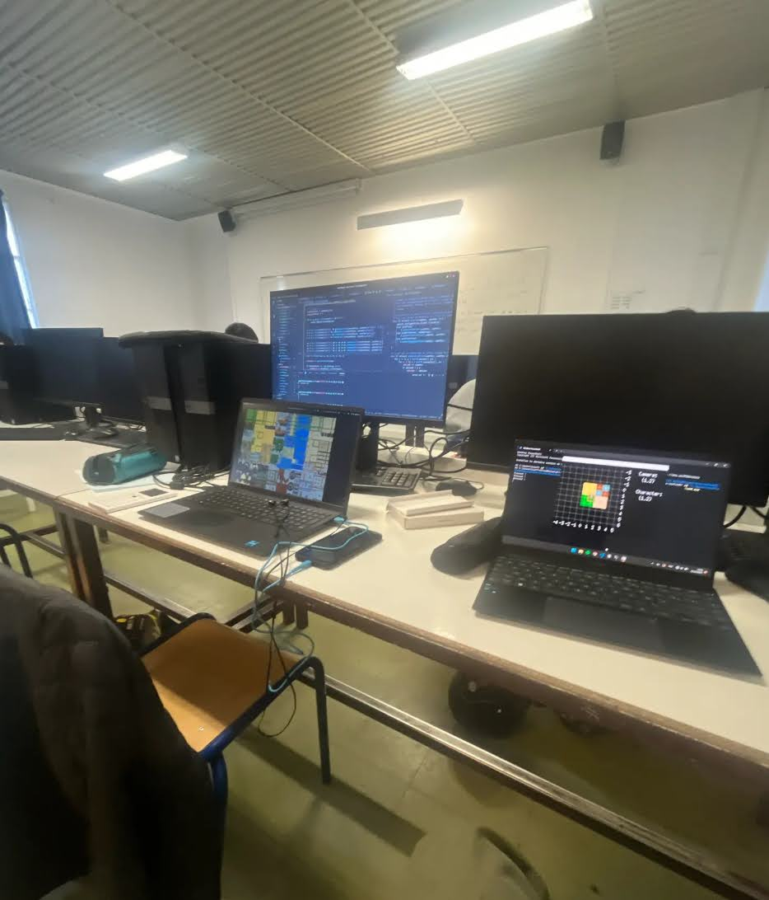
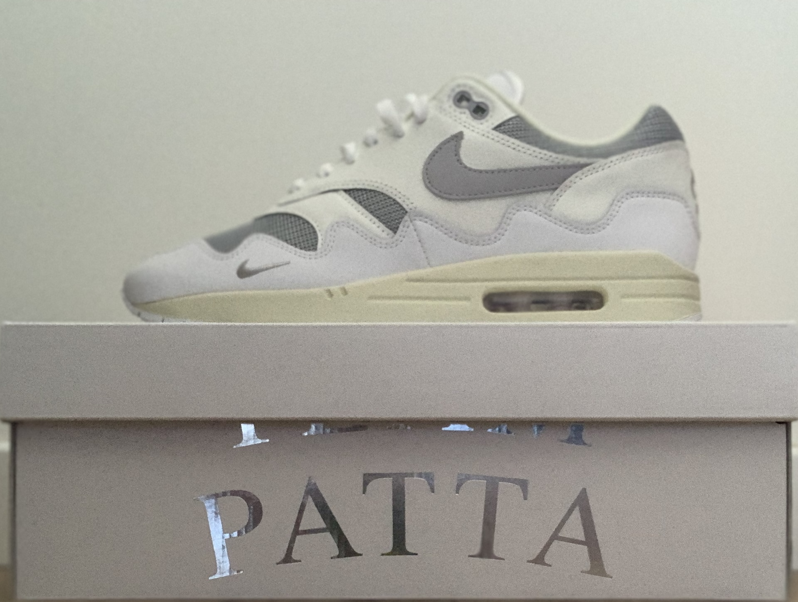
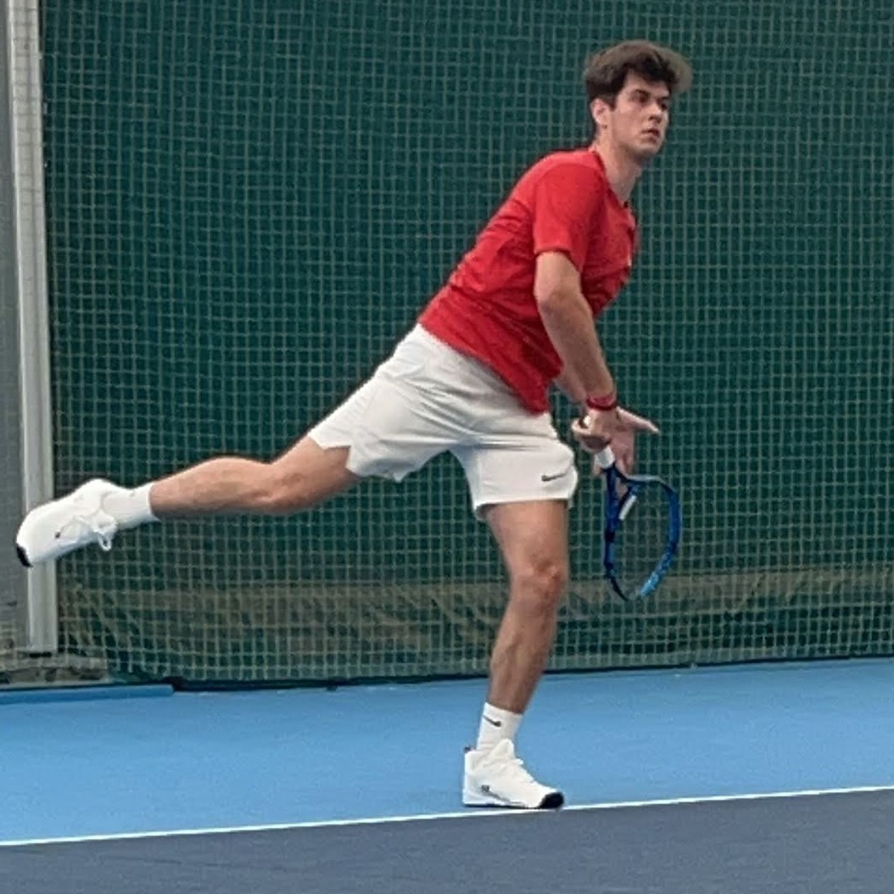
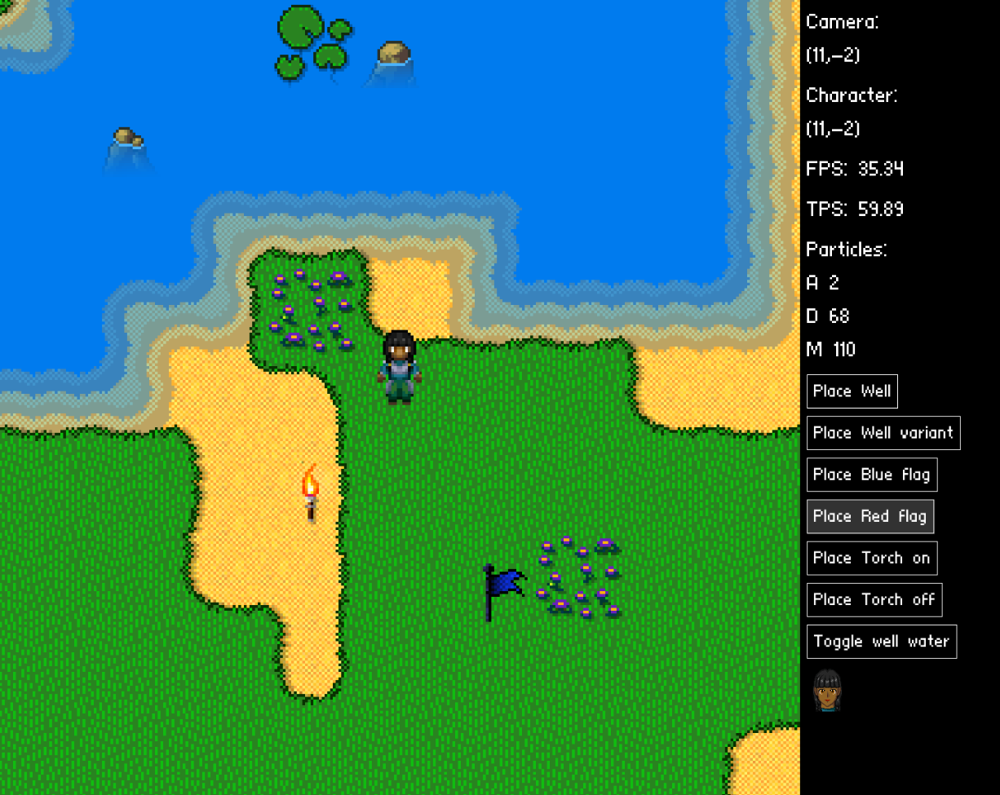
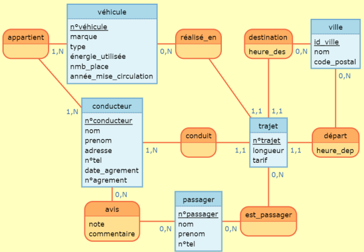
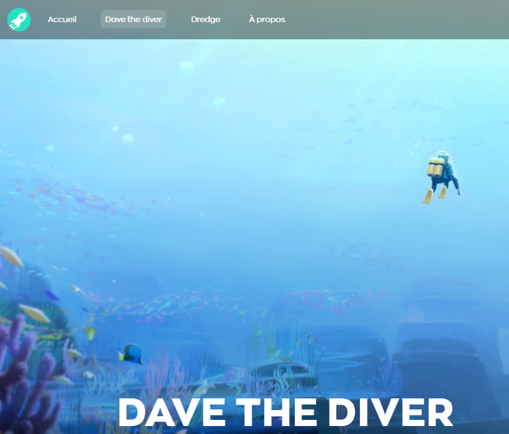

QUI SUIS-JE ?




Bonjour, je suis Thomas Carfantan, j'ai 19 ans et je suis passionné d'informatique. Depuis 5 ans je consacre une grande partie de mon temps libre à apprendre et à développer mes compétences dans divers domaines de l'informatique tel que l'algorithmique, le développement web ainsi que le machine learning.
Cette passion m'a permit d'affiner et de trouver dans quelle voie j'ai souhaité m'engager. En effet je suis actuellement en première année de BUT informatique à l'IUT de Nantes au site Joffre. J'aimerais pouvoir continuer dans cette voie en développant des compétences et une expertise approfondies dans certains domaines avant de trouver la spécialité que je souhaiterais poursuivre dans ce domaine très vaste.
En ajout de cette passion je suis captivé par le sport, par la musique ainsi que le monde de la mode et plus précisément des "sneakers". En effet je passe une grande partie de mon temps libre à écouter toute sorte de types de musique et à m'intéresser aux dernières sorties de vêtements ou à chercher des inspirations pour développer ma créativité.
Depuis que j'ai 12 ans je pratique le tennis en club et j'ai commencé à mes 14 ans le tennis en compétition. J'ai pu pendant 2 années gérer une équipe de championnat. Je donne beaucoup d'importance à la pratique du tennis qui me permet de développer différentes compétences tels que la gestion d'une équipe et du stresse, ainsi qu'à améliorer mon moral et ma capacité à garder mon calme.
2/5
MES PROJETS :

Projet GO
En octobre 2023 j'ai pu réaliser un projet en binôme avec le langage GO.Ce projet m'a tout d'abord appris à utiliser et à comprendre le langage GO ainsi qu'à développer certaines compétence dans la gestion d'un petit projet sur 3 mois.La principal difficulté lors de ce projet était de gérer le suivi de la caméra en optant pour un système de "quadtree".Ainsi à la fin nous avons réalisé un petit jeu dans lequel nous pouvons nous déplacer avec un personnage et gérer différents modes.

Mise en place d'une base de donnée de co-voiturage
Dans le cadre d'un projet du BUT nous avons dû mettre en place en équipe une base de donnée de covoiturage. Ce projet m'a permis d'apprendre le fonctionnement d'un base de donnée ainsi qu'à entrer et analyser des données et à créer des tables avec des dépendances en réalisant des requêtes SQL. A l'issu de ce projet nous avions donc une base de donnée fonctionnelle et qui respecte les principes primordiaux de la mise en place d'une base de données.

Création d'un site statique
En décembre 2023 nous avons créé, à 5, un site statique, c'est à dire un site non fonctionnelle mais qui met en place tout le design. En effet, le but de ce projet était d'étudier les différentes règles qui font que l'expérience utilisateur soit la meilleure possible sur un site web. Les principales difficultées étaient donc de joindre chacune de ces règles fondammentales sans en oublier et aussi de réussir à se partager au mieux le travail et à lier le travail de chacun. Il à ainsi dû être important de se définir un style général pour que le site reste le plus cohérent possible.
4/5
Pour me contacter :
Adresse mail :
t.carfantan00@gmail.com
Numéro de téléphone :
07 80 34 02 89
5/5